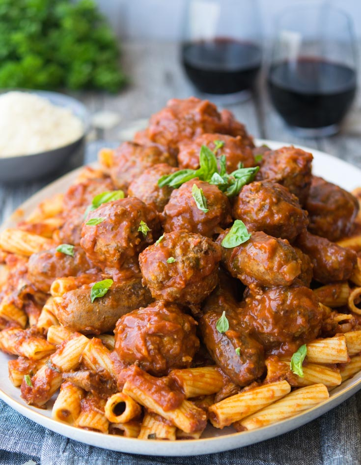

Sunday Pasta

My most used recipe. Emily and I found this dish in one of those meal prep kits, I believe it was 'HelloFresh'. After a couple minor adjustments it's become a favorite!
Ingredients
- Pasta, preference rigatoni
- Ground tomatoes
- Garlic
- Onion
- Carrot
- Spinach
- Ground Turkey/Beef/Pork
- Balsamic Vinegar
- Olive Oil
- Parmesan
- Salt and Pepper
- Basil
Steps
- Heat water until boiled, add Pasta, cook to Al Dente
- Roughly chop garlic, onion, and carrot
- Generously coat a deep frying pan in olive oil, fry until garlic and onion are fragrant
- Add ground turkey, season with salt and pepper, cook through
- Add Spinach to boiled water for 30 seconds
- Add ground tomatoes to pan, pour in balsamic vinegar to taste
- Add pasta, top with fresh basil and parmesan
- Enjoy!